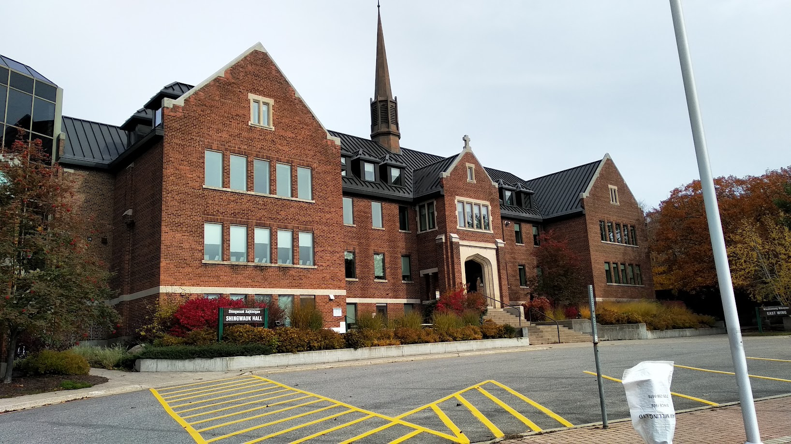

Since Prof. Hu and R2/C2 are based in Sault Ste. Marie, the Land Acknowledgement is specific to
Sault Ste. Marie. Other campuses use different Land Acknowledgement statements. The statements
are obtained from the Office of Equity, Diversity, and Inclusion at Algoma University.

Shingwauk Hall at Algoma University, Sault Ste. Marie.
This was also the main building of a residential school.
Statements
We acknowledge that we are in Robinson-Huron Treaty territory and the
land on which we gather is the traditional territory of the Anishnaabeg,
specifically the Garden River and Batchewana First Nations, as well as the Métis People.
We are on sacred lands set aside for education as envisioned by Chief Shingwauk for our children and for those as yet unborn.
Note
The Sault Ste. Marie campus is located on the site of a former residential school.
Originally, the land was offered by Chief Shingwauk so that an institution could be
developed there to provide quality education. Instead of respecting the Chief's original vision, a residential school was
instead created in order to assimiliate the children of the First Nation. The
Special Missions of Algoma University are to right
the wrongs of the past.